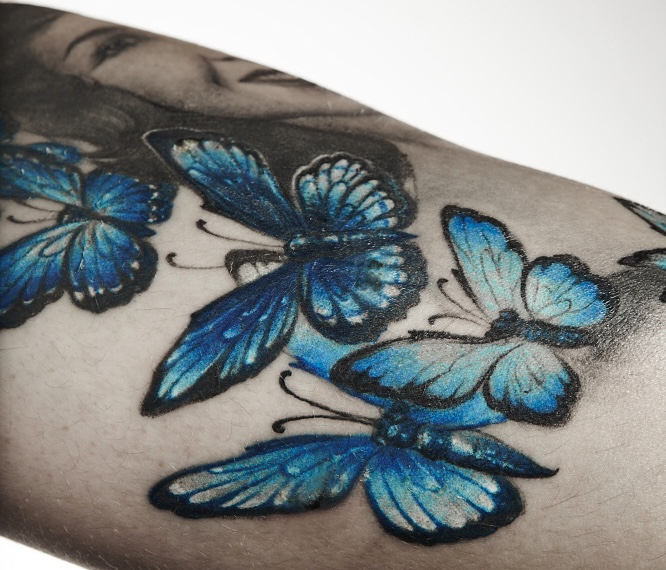

Kat Von D Tattoo Inspired Designs
Kat Von D, born Katherine Von Drachenberg, is a Mexican-American tattoo and makeup artist. Since a young age, she had a love for art, which she credits her grandmother for. She got her very first tattoo at 14 years old and became a tattoo artist at 16 years old. She appeared on many tattooing reality shows and earned a Guinness World Record for most tattoos done in 24 hours (nearly 400 tattoos). She opened her first tattoo shop, High Voltage Tattoo in Los Angeles, California. The following year she launched her own makeup line at Sephora, named after herself and eventually turned her brand 100% vegan. In 2009, she released an “autobiography” titled High Voltage Tattoo, a compilation of her tattoo pieces and various artworks. Kat Von D’s tattooing style typically sticks to black and grey ink portraits, drawing heavily on Chicano (Mexican-American) artwork and culture. She is known for her buttery smooth shading and ability to capture facial features in striking portraitures. Von D’s clientele list is extensive, having tattooed celebrities such as Lady Gaga, Mary J. Blige and Eminem.